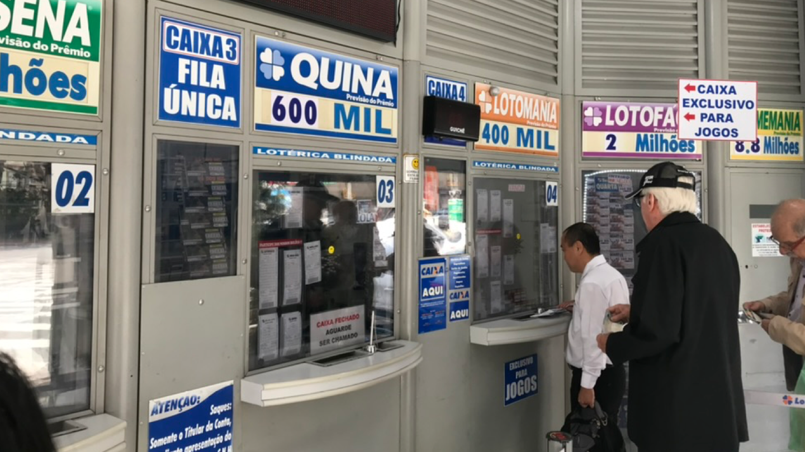
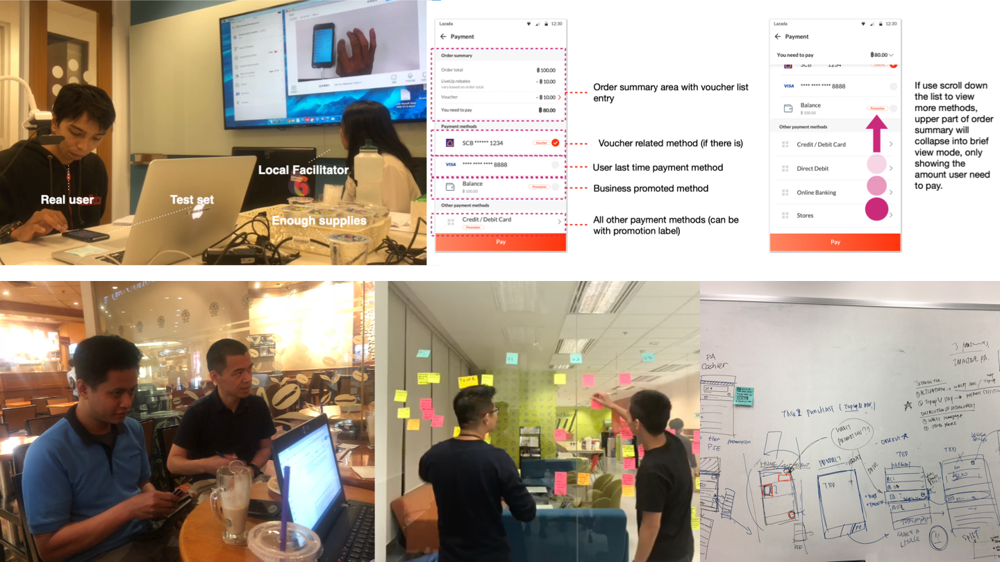

Successful TRANS-ACTION results from an experience of TRUST+ACTION. Designing payment solutions for diverse markets.
I worked in the International BU of Ant Group (Alipay), which provides payment solutions for its affiliated Alibaba cross-border business, 2 of which I participated in are:
In the project, I set my feet in all local markets, utilizing localized user insights and platform data to drive new and existing payment enablement.
Outside the credit card dominated world, 17% people worldwide and 67% in Southeast Asia are unbanked. With e-commerce bringing products to them, the last connection before logistics is payment. With vastly varied local financial environment and payment methods, Ant Group aims to connect local users with their preferred payment experience.
These payment methods include: Cash on delivery, Store payment, Bank debit, Online banking, E-wallet, Voucher payment, and more.
The team knew very little about local users' behavior and payment habits. With existing payment methods suffering from low success rate, data itself cannot tell all the reasons for improvement.
For each market and each payment method that I was involved, me and my team started by understanding more about the country and users:
The core design principles are based in the essence of payment, which is the TRUST from users. The team worked hard to locate key LOCAL TRUST element in user experience and leveraged it to connect users.
With that, I designed for more than 20 methods in more than 5 countries. In Philippines, I helped upgrade Cash on delivery method in Lazada to ewallet option and increase its transaction by 5.01%. In Brazil, I optimized experience of Boleto method and increase its success rate by 4.01%.